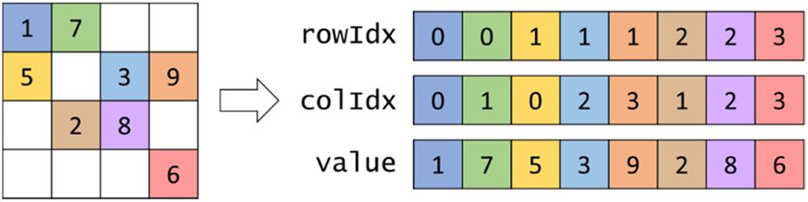
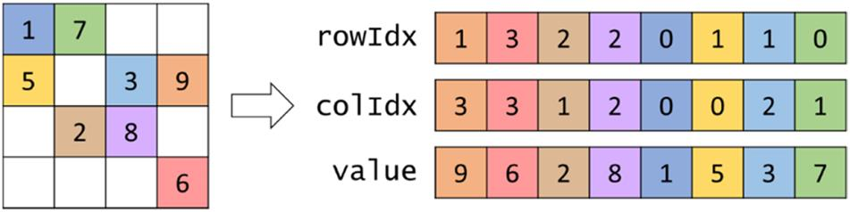
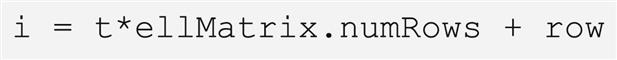
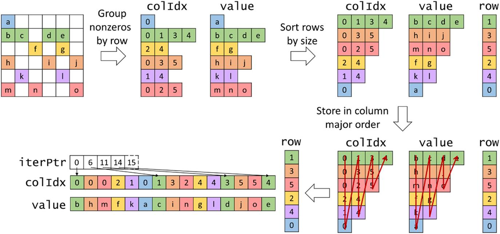

This chapter introduces the parallel sparse matrix-vector computation pattern. It starts with the basic concepts of sparse matrices, which are matrices in which most of the elements are zeros. It introduces the coordinate list format as a flexible representation that does not store zero matrix elements. It then introduces a kernel based on compressed sparse row data storage for sparse matrices. The ELL format with data padding is then introduced as a regularization technique for improved memory coalescing. Finally, the jagged diagonal storage format based on sorting is introduced to smooth out variation from one row to the next row, allowing further reduction of control divergence and padding overhead in the regularization process. The chapter shows that the same sparse matrix kernel code can exhibit very different performance behavior on different datasets.
Sparse matrix; compression; regularization; data-dependent execution behavior; transposition; padding; space efficiency; memory access efficiency; accessibility; flexibility; memory alignment; memory coalescing
Our next parallel pattern is sparse matrix computation. In a sparse matrix the majority of the elements are zeros. Storing and processing these zero elements are wasteful in terms of memory capacity, memory bandwidth, time, and energy. Many important real-world problems involve sparse matrix computation. Because of the importance of these problems, several sparse matrix storage formats and their corresponding processing methods have been proposed and widely used in the field. All these methods employ some type of compaction techniques to avoid storing or processing zero elements at the cost of introducing some level of irregularity into the data representation. Unfortunately, such irregularity can lead to underutilization of memory bandwidth, control flow divergence, and load imbalance in parallel computing. It is therefore important to strike a good balance between compaction and regularization. Some storage formats achieve a higher level of compaction at a high level of irregularity. Others achieve a more modest level of compaction while keeping the representation more regular. The relative performance of a parallel computation using each storage format is known to be heavily dependent on the distribution of nonzero elements in the sparse matrices. Understanding the wealth of work in sparse matrix storage formats and their corresponding parallel algorithms gives a parallel programmer important background for addressing compaction and regularization challenges in solving related problems.
A sparse matrix is a matrix in which most of the elements are zeros. Sparse matrices arise in many scientific, engineering, and financial modeling problems. For example, matrices can be used to represent the coefficients in a linear system of equations. Each row of the matrix represents one equation of the linear system. In many science and engineering problems the large number of variables and equations that are involved are sparsely coupled. That is, each equation involves only a small number of variables. This is illustrated in Fig. 14.1, in which each column of the matrix corresponds to the coefficients for a variable: column 0 for x0, column 1 for x1, and so on. For example, the fact that row 0 has nonzero elements in columns 0 and 1 indicates that only variables x0 and x1 are involved in equation 0. It should be clear that variables x0, x2, and x3 are present in equation 1, variables x1 and x2 are present in equation 2, and only variable x3 is present in equation 3. Sparse matrices are typically stored in a format, or representation, that avoids storing zero elements.
Matrices are often used in solving linear systems of N equations of N variables in the form of A*X + Y = 0, where A is an N × N matrix, X is a vector of N variables, and Y is a vector of N constant values. The objective is to solve for the X variable values that will satisfy all the equations. An intuitive approach is to invert the matrix so that X = A−1 * (−Y). This can be done for matrices of moderate size through methods such as Gaussian elimination. While it is theoretically possible to use these methods to solve the equations that are represented by sparse matrices, the sheer size of many sparse matrices can overwhelm this intuitive approach. Furthermore, an inverse sparse matrix is often much larger than the original because the inversion process tends to generate many additional nonzero elements, which are called “fill-ins.” As a result, it is often impractical to compute and store the inverse matrix in solving real-world problems.
Linear systems of equations represented in sparse matrices can be better solved with an iterative approach. When the sparse matrix A is positive-definite (i.e., xTAx > 0 for all nonzero vectors x in Rn), one can use conjugate gradient methods to iteratively solve the corresponding linear system with guaranteed convergence to a solution (Hestenes and Stiefel, 1952). Conjugate gradient methods guess a solution for X, and perform A*X + Y, and see whether the result is close to a 0 vector. If not, we can use a gradient vector formula to refine the guessed X and perform another iteration of A*X + Y. These iterative solution methods for linear systems are closely related to the iterative solution methods for differential equations that we introduced in Chapter 8, Stencil.
The most time-consuming part of iterative approaches to solving linear systems of equations is in the evaluation of A*X + Y, which is a sparse matrix-vector multiplication and accumulation. Fig. 14.2 shows a small example of matrix-vector multiplication and accumulation in which A is a sparse matrix. The dark squares in A represent nonzero elements. In contrast, both X and Y are typically dense vectors. That is, most of the elements of X and Y hold nonzero values. Owing to its importance, standardized library function interfaces have been created to perform this operation under the name SpMV (sparse matrix vector multiplication and accumulation). We will use SpMV to illustrate the important tradeoffs between different storage formats in parallel sparse matrix computation.
The main objective of the different sparse matrix storage formats is to remove all the zero elements from the matrix representation. Removing all the zero elements not only saves storage but also eliminates the need to fetch these zero elements from memory and perform useless multiplication or addition operations with them. This can significantly reduce the consumption of memory bandwidth and computation resources.
There are various design considerations that go into the structure of a sparse matrix storage formats. The following is a list of some of the key considerations:
Throughout this chapter we will introduce different storage formats and examine how these storage formats compare in each of these design considerations.
The first sparse matrix storage format that we will discuss is the coordinate list (COO) format. The COO format is illustrated in Fig. 14.3. COO stores the nonzero values in a one-dimensional array, which is shown as the value array. Each nonzero element is stored with both its column index and its row index. We have both colIdx and rowIdx arrays to accompany the value array. For example, A[0,0] of our small example is stored at the entry with index 0 in the value array (1 in value[0]) with both its column index (0 in colIdx[0]) and its row index (0 in rowIdx[0]) stored at the same position in the other arrays.

COO completely removes all zero elements from the storage. It does incur storage overhead by introducing the colIdx and rowIdx arrays. In our small example, in which the number of zero elements is not much larger than the number of nonzero elements, the storage overhead is actually more than the space that is saved by not storing the zero elements. However, it should be clear that for sparse matrices in which the vast majority of elements are zeros, the overhead that is introduced is far less than the space that is saved by not storing zeros. For example, in a sparse matrix in which only 1% of the elements are nonzero values, the total storage for the COO representation, including all the overhead, would be around 3% of the space required to store both zero and nonzero elements.
One approach to performing SpMV in parallel using a sparse matrix represented in the COO format is to assign a thread to each nonzero element in the matrix. An example of this parallelization approach is illustrated in Fig. 14.4, and the corresponding code is shown in Fig. 14.5. In this approach, each thread identifies the index of the nonzero element for which it is responsible (line 02) and ensures that it is within bounds (line 03). Next, the thread identifies the row index (line 04), column index (line 05), and value (line 06) of the nonzero element for which it is responsible from the rowIdx, colIdx, and value arrays, respectively. It then looks up the input vector value at the location corresponding to the column index, multiplies it by the nonzero value, then accumulates the result to the output value at the corresponding row index (line 07). An atomic operation is used for the accumulation because multiple threads may update the same output element, as is the case with the first two threads mapped to row 0 of the matrix in Fig. 14.4. It should be obvious that any SpMV computation code will reflect the storage format assumed. Therefore we add the storage format to the name of the kernel to clarify the combination that was used. We also refer to the SpMV code in Fig. 14.5 as SpMV/COO.
Now we examine the COO format under the design considerations listed in Section 14.1: space efficiency, flexibility, accessibility, memory access efficiency, and load balance. For space efficiency we defer the discussion for later, when we have introduced other formats. For flexibility we observe that we can arbitrarily reorder the elements in a COO format without losing any information as long as we reorder the rowIdx, colIdx, and value arrays in the same way. This is illustrated by using our small example in Fig. 14.6, where we have reordered the elements of rowIdx, colIdx, and value. Now value[0] actually contains an element from row 1 and column 3 of the original sparse matrix. Because we have also shifted the row index and column index values along with the data value, we can correctly identify this element’s location in the original sparse matrix.

In the COO format, we can process the elements in any order we want. The correct y element that is identified by rowIdx[i] will receive the correct contribution from the product of value[i] and x[colIdx[i]]. If we make sure that we somehow perform this operation for all elements of value, we will calculate the correct final answer regardless of the order in which we process these elements.
The reader may ask why we would want to reorder these elements. One reason is that the data may be read from a file that does not provide the nonzeros in a particular order, and we still need a consistent way of representing the data. For this reason, COO is a popular choice of storage format when the matrix is initially being constructed. Another reason is that not having to provide any ordering enables nonzeros to be added to the matrix by simply appending entries at the end of each of the three arrays. For this reason, COO is a popular choice of storage format when the matrix is modified throughout the computation. We will see another benefit of the flexibility of the COO format in Section 14.5.
The next design consideration that we look at is accessibility. COO makes it easy to access, for a given nonzero, its corresponding row index and column index. This feature of COO enables parallelization across nonzero elements in SpMV/COO. On the other hand, COO does not make it easy to access, for a given row or column, all the nonzeros in that row or column. For this reason, COO would not be a good choice of format if the computation required a row-wise or column-wise traversal of the matrix.
For memory access efficiency we refer to the physical view in Fig. 14.4 for how the threads access the matrix data from memory. The access pattern is such that consecutive threads access consecutive elements in each of the three arrays that form the COO format. Therefore accesses to the matrix by SpMV/COO are coalesced.
For load balance we recall that each thread is responsible for a single nonzero value. Hence all threads are responsible for the same amount of work, which means that we do not expect any control divergence to take place in SpMV/COO except for the threads at the boundary.
The main drawback of SpMV/COO is the need to use atomic operations. The reason for using atomic operations is that multiple threads are assigned to nonzeros in the same row and therefore need to update the same output value. The atomic operations can be avoided if all the nonzeros in the same row are assigned to the same thread such that the thread will be the only one updating the corresponding output value. However, recall that the COO format does not give this accessibility. In the COO format, it is not easy to access, for a given row, all the nonzeros in that row. In the next section we will see another storage format that provides this accessibility.
In the previous section we saw that parallelizing SpMV with the COO format suffers from the use of atomic operations because the same output value is updated by multiple threads. These atomic operations can be avoided if the same thread is responsible for all the nonzeros of a row, which requires the storage format to give us the ability to access, for a given row, all the nonzeros in that row. This kind of accessibility is provided by the compressed sparse row (CSR) storage format.
Fig. 14.7 illustrates how the matrix in Fig. 14.1 can be stored by using the CSR format. Like the COO format, CSR stores the nonzero values in a one-dimensional array shown as the value array in Fig. 14.2. However, these nonzero values are grouped by row. For example, we store the nonzero elements of row 0 (1 and 7) first, followed by the nonzero elements of row 1 (5, 3, and 9), followed by the nonzero elements of row 2 (2 and 8), and finally the nonzero elements of row 3 (6).
Also similar to the COO format, CSR stores for each nonzero element in the value array its column index at the same position in the colIdx array. Naturally, these column indices are grouped by row as the values are. In Fig. 14.7 the nonzeros of each row are sorted by their column indices in increasing order. Sorting the nonzeros in this way results in favorable memory access patterns, but it is not necessary. The nonzeros within each row may not necessarily be sorted by their column index, and the kernel that is presented in this section will still work correctly. When the nonzeros within each row are sorted by their column index, the layout of the value array (and the colIdx array) for CSR can be viewed as the row-major layout of the matrix after eliminating all the zero elements.
The key distinction between the COO format and the CSR format is that the CSR format replaces the rowIdx array with a rowPtrs array that stores the starting offset of each row’s nonzeros in the colIdx and value arrays. In Fig. 14.7 we show a rowPtrs array whose elements are the indices for the beginning locations of each row. That is, rowPtrs[0] indicates that row 0 starts at location 0 of the value array, rowPtrs[1] indicates that row 1 starts at location 2, and so on. Note that rowPtrs[4] stores the starting location of a nonexistent “row 4.” This is for convenience, as some algorithms need to use the starting location of the next row to delineate the end of the current row. This extra marker gives a convenient way to locate the ending location of row 3.
To perform SpMV in parallel using a sparse matrix represented in the CSR format, one can assign a thread to each row of the matrix. An example of this parallelization approach is illustrated in Fig. 14.8, and the corresponding code is shown in Fig. 14.9. In this approach, each thread identifies the row that it is responsible for (line 02) and ensures that it is within bounds (line 03). Next, the thread loops through the nonzero elements of its row to perform the dot product (lines 05–06). To find the row’s nonzero elements, the thread looks up their starting index in the rowPtrs array (rowPtrs[row]). It also finds where they end by looking up the starting index of the next row’s nonzeros (rowPtrs[row + 1]). For each nonzero element the thread identifies its column index (line 07) and value (line 08). It then looks up the input value at the location corresponding to the column index, multiplies it by the nonzero value, and accumulates the result to a local variable sum (line 09). The sum variable is initialized to 0 before the dot product loop begins (line 04) and is accumulated to the output vector after the loop is over (line 11). Notice that the accumulation of the sum to the output vector does not require atomic operations. The reason is that each row is traversed by a single thread, so each thread will write to a distinct output value, as illustrated in Fig. 14.8.
Now we examine the CSR format under the design considerations listed in Section 14.1: space efficiency, flexibility, accessibility, memory access efficiency, and load balance. For space efficiency we observe that CSR is more space efficient than COO. COO requires three arrays, rowIdx, colIdx, and value, each of which has as many elements as the number of nonzeros. In contrast, CSR requires only two arrays, colIdx and value, with as many elements as the number of nonzeros. The third array, rowPtrs, requires only as many elements as the number of rows plus one, which makes it substantially smaller than the rowIdx array in COO. This difference makes CSR more space efficient than COO.
For flexibility we observe that CSR is less flexible than COO when it comes to adding nonzeros to the matrix. In COO a nonzero can be added by simply appending it to the ends of the arrays. In CSR a nonzero to be added must be added to the specific row to which it belongs. This means that the nonzero elements of the later rows would all need to be shifted, and the row pointers of the later rows would all need to be incremented accordingly. For this reason, adding nonzeros to a CSR matrix is substantially more expensive than adding them to a COO matrix.
For accessibility, CSR makes it easy to access, for a given row, the nonzeros in that row. This feature of CSR enables parallelization across rows in SpMV/CSR, which is what allows it to avoid atomic operations in comparison with SpMV/COO. In a real-world sparse matrix application there are usually thousands to millions of rows, each of which contains tens to hundreds of nonzero elements. This makes parallelization across rows seem very appropriate: There are many threads, and each thread has a substantial amount of work. On the other hand, for some applications the sparse matrix may not have enough rows to fully utilize all the GPU threads. In these kinds of applications the COO format can extract more parallelism, since there are more nonzeros than rows. Moreover, CSR does not make it easy to access, for a given column, all the nonzeros in that column. Thus an application may need to maintain an additional, more column-oriented layout of the matrix if easy access to all elements of a column is needed.
For memory access efficiency we refer to the physical view in Fig. 14.8 for how the threads access the matrix data from memory during the first iteration of the dot product loop. The access pattern is such that consecutive threads access data elements that are far apart. In particular, threads 0, 1, 2, and 3 will access value[0], value[2], value[5], andvalue[7], respectively, in the first iteration of their dot product loop. They will then access value[1], value[3], value[6], and no data, respectively, in the second iteration, and so on. As a result, the accesses to the matrix by the parallel SpMV/CSR kernel in Fig. 14.9 are not coalesced. The kernel does not make efficient use of memory bandwidth.
For load balance we observe that the SpMV/CSR kernel can potentially have significant control flow divergence in all warps. The number of iterations that are taken by a thread in the dot product loop depends on the number of nonzero elements in the row that is assigned to the thread. Since the distribution of nonzero elements among rows can be random, adjacent rows can have very different number of nonzero elements. As a result, there can be widespread control flow divergence in most or even all warps.
In summary, we have seen that the advantages of CSR over COO are that it has better space efficiency and that it gives us access to all the nonzeros of a row, allowing us to avoid atomic operations by parallelizing the computation across rows in SpMV/CSR. On the other hand, the disadvantages of CSR over COO are that it provides less flexibility with adding nonzero elements to the sparse matrix, it exhibits a memory access pattern that is not amenable to coalescing, and it causes high control divergence. In the following sections we discuss additional storage formats that sacrifice some space efficiency as compared to CSR in order to improve memory coalescing and reduce control divergence. Note that converting from COO to CSR on the GPU is an excellent exercise for the reader, using multiple fundamental parallel computing primitives, including histogram and prefix sum.
The problem of noncoalesced memory accesses can be addressed by applying data padding and transposition on the sparse matrix data. These ideas were used in the ELL storage format, whose name came from the sparse matrix package in ELLPACK, a package for solving elliptic boundary value problems (Rice and Boisvert, 1984).
A simple way to understand the ELL format is to start with the CSR format, as is illustrated in Fig. 14.10. From a CSR representation that groups nonzeros by row, we determine the rows with the maximal number of nonzero elements. We then add padding elements to all other rows after the nonzero elements to make them the same length as the maximal rows. This makes the matrix a rectangular matrix. For our small sparse matrix example we determine that row 1 has the maximal number of elements. We then add one padding element to row 0, one padding element to row 2, and two padding elements to row 3 to make all them the same length. These additional padding elements are shown as squares with an * in Fig. 14.11. Now the matrix has become a rectangular matrix. Note that the colIdx array also needs to be padded the same way to preserve its correspondence to the values array.
We can now lay the padded matrix out in column-major order. That is, we will place all elements of column 0 in consecutive memory locations, followed by all elements of column 1, and so on. This is equivalent to transposing the rectangular matrix in the row-major order used by the C language. In terms of our small example, after the transposition, value[0] through value[3] now contain 1, 5, 2, 6, which are the 0th elements of all rows. This is illustrated in the bottom left portion of Fig. 14.10. Similarly, colIdx[0] through colIdx[3] contain the column positions of 0th elements of all rows. Note that we no longer need the rowPtrs, since the beginning of row r is now simply value[r]. With the padded elements it is also very easy to move from the current element of row r to the next element by simply adding the number of rows in the original matrix to the index. For example, the 0th element of row 2 is in value[2], and the next element is in value[2+4], which is equivalent to value[6], where 4 is the number of rows in the original matrix in our small example.
We illustrate how to parallelize SpMV using the ELL format in Fig. 14.11, along with a parallel SpMV/ELL kernel in Fig. 14.12. Like CSR, each thread is assigned to a different row of the matrix (line 02), and a boundary check ensures that the row is within bounds (line 03). Next, a dot product loop goes through the nonzero elements of each row (line 05). Note that the SpMV/ELL kernel assumes that the input matrix has a vector ellMatrix.nnzPerRow that records the number of nonzeros in each row and allows each thread to iterate only through the nonzeros in its assigned row. If the input matrix does not have this vector, the kernel can simply iterate through all elements, including the padding elements, and still execute correctly, since the padding elements have value zero and will not affect the output values. Next, since the compressed matrix is stored in column-major order, the index i of the nonzero element in the one-dimensional array can be found by multiplying the iteration number t by the number of rows and adding the row index (line 06). Next, the thread loads the column index (line 07) and nonzero value (line 08) from the ELL matrix arrays. Note that the accesses to these arrays are coalesced because the index i is expressed in terms of row, which itself is expressed in terms of threadIdx.x, meaning that consecutive threads have consecutive array indices. Next, the thread looks up the input value, multiplies it by the nonzero value, and accumulates the result to a local variable sum (line 09). The sum variable is initialized to 0 before the dot product loop begins (line 04) and is accumulated to the output vector after the loop is over (line 11).
Now we examine the ELL format under the design considerations listed in Section 14.1: space efficiency, flexibility, accessibility, memory access efficiency, and load balance. For space efficiency we observe that the ELL format is less space efficient than the CSR format, owing to the space overhead of the padding elements. The overhead of the padding elements highly depends on the distribution of nonzeros in the matrix. In situations in which one or a small number of rows have an exceedingly large number of nonzero elements, the ELL format will result in an excessive number of padded elements. Consider our sample matrix; in the ELL format we have replaced a 4 × 4 matrix with a 4 × 3 matrix, and with the overhead from the column indices we are storing more data than was contained in the original 4 × 4 matrix. For a more realistic example, if a 1000 × 1000 sparse matrix has 1% of its elements of nonzero value, then on average, each row has ten nonzero elements. With the overhead, the size of a CSR representation would be about 2% of the uncompressed total size. Assume that one of the rows has 200 nonzero values while all other rows have less than 10. Using the ELL format, we will pad all other rows to 200 elements. This makes the ELL representation about 40% of the uncompressed total size and 20 times larger than the CSR representation. This calls for a method to control the number of padded elements when we convert from the CSR format to the ELL format, which we will introduce in the next section.
For flexibility we observe that ELL is more flexible than CSR when it comes to adding nonzeros to the matrix. In CSR, adding a nonzero to a row would require shifting all the nonzeros of the subsequent rows and incrementing their row pointers. However, in ELL, as long as a row does not have the maximum number of nonzeros in the matrix, a nonzero can be added to the row by simply replacing a padding element with an actual value.
For accessibility, ELL gives us the accessibility of both CSR and COO. We saw in Fig. 14.12 how ELL allows us to access, given a row index, the nonzeros of that row. However, ELL also allows us to access, given the index of a nonzero element, the row and column index of that element. The column index is trivial to find, as it can be accessed from the colIdx array at the same location i. However, the row index can also be accessed, owing to the regular nature of the padded matrix. Recall that the index i of the nonzero element was calculated in Fig. 14.9 as follows:

Therefore if instead i is given and we would like to find row, it can be found as follows:
because row is always less than ellMatrix.numRows, so row%ellMatrix.numRows is simply row itself. This accessibility of ELL allows parallelization across both rows as well as nonzero elements.
For memory access efficiency we refer to the physical view in Fig. 14.11 for how the threads access the matrix data from memory during the first iteration of the dot product loop. The access pattern is such that consecutive threads access consecutive data elements. With the elements arranged in column-major order, all adjacent threads are now accessing adjacent memory locations, enabling memory coalescing and thus making more efficient use of memory bandwidth. Some GPU architectures, especially in the older generations, have more strict address alignment rules for memory coalescing. One can force each iteration of the SpMV/ELL kernel to be fully aligned to architecturally specified alignment units such as 64 bytes by adding a few rows to the end of the matrix before transposition.
For load balance we observe that SpMV/ELL still exhibits the same load imbalance as SpMV/CSR because each thread still loops over the number of nonzeros in the row for which it is responsible. Therefore ELL does not address the problem of control divergence.
In summary, the ELL format improves on the CSR format by allowing more flexibility to add nonzeros by replacing padding elements, better accessibility, and, most important, more opportunities for memory coalescing in SpMV/ELL. However, ELL has worse space efficiency than CSR, and the control divergence of SpMV/ELL is as bad as that of SpMV/CSR. In the next section we will see how we can improve on the ELL format to address the problems of space efficiency and control divergence.
The problems of low space efficiency and control divergence in the ELL format are most pronounced when one or a small number of rows have exceedingly large number of nonzero elements. If we have a mechanism to “take away” some elements from these rows, we can reduce the number of padded elements in ELL and also reduce the control divergence. The answer lies in an important use case for the COO format.
The COO format can be used to curb the length of rows in the ELL format. Before we convert a sparse matrix to ELL, we can take away some of the elements from the rows with exceedingly large numbers of nonzero elements and place the elements into a separate COO storage. We can use SpMV/ELL on the remaining elements. With the excess elements removed from the extra-long rows, the number of padded elements for other rows can be significantly reduced. We can then use a SpMV/COO to finish the job. This approach of employing two formats to collaboratively complete a computation is often referred to as a hybrid method.
Fig. 14.13 illustrates how an example matrix can be represented using the hybrid ELL-COO format. We see that in the ELL format alone, rows 1 and 6 have the largest number of nonzero elements, causing the other rows to have excessive padding. To address this issue, we remove the last three nonzero elements of row 2 and the last two nonzero elements of row 6 from the ELL representation and move them into a separate COO representation. By removing these elements, we reduce the maximal number of nonzero elements among all rows in the small sparse matrix from 5 to 2. As shown in Fig. 14.13, we reduced the number of padded elements from 22 to 3. More important, all threads now need to take only two iterations.
The reader may wonder whether the additional work done to separate COO elements from an ELL format could incur too much overhead. The answer is that it depends. In situations in which a sparse matrix is used in only one SpMV calculation, this extra work can indeed incur significant overhead. However, in many real-work applications, the SpMV is performed on the same sparse kernel repeatedly in an iterative solver. In each iteration of the solver the x and y vectors vary, but the sparse matrix remains the same, since its elements correspond to the coefficients of the linear system of equations being solved, and these coefficients do not change from iteration to iteration. Therefore the work done to produce both the hybrid ELL and COO representation can be amortized across many iterations. We will come back to this point in the next section.
Now we examine the hybrid ELL-COO format under the design considerations listed in Section 14.1: space efficiency, flexibility, accessibility, memory access efficiency, and load balance. For space efficiency we observe that the hybrid ELL-COO format has better space efficiency than the ELL format alone because it reduces the amount of padding used.
For flexibility we observe that the hybrid ELL-COO format is more flexible than just ELL when it comes to adding nonzeros to the matrix. With ELL we can add nonzero elements by replacing padding elements for rows that have them. With hybrid COO-ELL we can also add nonzeros by replacing padding elements. However, we can also append nonzeros to the COO part of the format if the row does not have any padding elements that can be replaced in the ELL part.
For accessibility we observe that the hybrid ELL-COO format sacrifices accessibility compared to the ELL format alone. In particular, it is not always possible to access, given a row index, all the nonzeros in that row. Such an access can be done only for the rows that fit in the ELL part of the format. If the row overflows to the COO part, then finding all the nonzeros of the row would require searching the COO part, which is expensive.
For memory access efficiency, both SpMV/ELL and SpMV/COO exhibit coalesced memory accesses to the sparse matrix. Hence their combination will also result in a coalesced access pattern.
For load balance, removing nonzeros from the long rows in the ELL part of the format reduces control divergence of the SpMV/ELL kernel. These nonzeros are placed in the COO part of the format, which does not affect control divergence, since SpMV/COO does not exhibit control divergence, as we have seen.
In summary, the hybrid ELL-COO format, in comparison with the ELL format alone, improves space efficiency by reducing padding, provides more flexibility for adding nonzeros to the matrix, retains the coalesced memory access pattern, and reduces control divergence. The price that is paid is a small limitation in accessibility, in which it becomes more difficult to access all the nonzeros of a given row if that row overflows to the COO part of the format.
We have seen that the ELL format can be used to achieve coalesced memory access patterns when accessing the sparse matrix in SpMV and that the hybrid ELL-COO format can further improve space efficiency by reducing padding and can also reduce control divergence. In this section we will look at another format that can achieve coalesced memory access patterns in SpMV and also reduce control divergence without the need to perform any padding. The idea is to sort the rows according to their length, say, from the longest to the shortest. Since the sorted matrix looks largely like a triangular matrix, the format is often referred to as the jagged diagonal storage (JDS) format.
Fig. 14.14 illustrates how a matrix can be stored using the JDS format. First, the nonzeros are grouped by row, as in the CSR and ELL formats. Next, the rows are sorted by the number of nonzeros in each row in increasing order. As we sort the rows, we typically maintain an additional row array that preserves the index of the original row. Whenever we exchange two rows in the sorting process, we also exchange the corresponding elements of the row array. Thus we can always keep track the original position of all rows. After the rows have been sorted, the nonzeros in the value array and their corresponding column indices in the colIdx array are stored in column-major order. A iterPtr array is added to track the beginning of the nonzero elements for each iteration.

Fig. 14.15 illustrates how SpMV can be parallelized by using the JDS format. Each thread is assigned to a row of the matrix and iterates through the nonzeros of that row, performing the dot product along the way. The threads use the iterPtr array to identify where the nonzeros of each iteration begin. It should be clear from the physical view on the right side of Fig. 14.15, which depicts the first iteration for each thread, that the threads access the nonzeros and column indices in the JDS arrays in a coalesced manner. The code for implementing SpMV/JDS is left as an exercise.
In another variation of the JDS format, the rows, after being sorted, can be partitioned into sections of rows. Since the rows have been sorted, all rows in a section will likely have more or less uniform numbers of nonzero elements. We can then generate the ELL representation for each section. Within each section we need to pad the rows only to match the row with the maximum number of elements in that section. This would reduce the number of padding elements substantially in comparison to one ELL representation of the entire matrix. In this variation of JDS, the iterPtr array would not be needed. Instead, one would need a section pointer array that points to the beginning of each ELL section only (as opposed to each iteration).
The reader should ask whether sorting rows will result in incorrect solutions to the linear system of equations. Recall that we can freely reorder equations of a linear system without changing the solution. As long as we reorder the y elements along with the rows, we are effectively reordering the equations. Therefore we will end up with the correct solution. The only extra step is to reorder the final solution back to the original order using the row array. The other question is whether sorting will incur significant overhead. The answer is similar to what we saw in the hybrid ELL-COO method. As long as the SpMV/JDS kernel is used in an iterative solver, one can afford to perform such sorting as well as the reordering of the final solution x elements and amortize the cost among many iterations of the solver.
Now we examine the ELL format under the design considerations listed in Section 14.1: space efficiency, flexibility, accessibility, memory access efficiency, and load balance. For space efficiency the JDS format is more space efficient than the ELL format because it avoids padding. The variant of JDS that uses ELL for each section has padding, but the amount of padding is less than that with the ELL format.
For flexibility the JDS format does not make it easy to add nonzeros to a row of the matrix. It is even less flexible than the CSR format because adding nonzeros changes the sizes of the rows, which may require rows to be resorted.
For accessibility the JDS format is similar to the CSR format in that it allows us to access, given a row index, the nonzero elements of that row. On the other hand, it does not make it easy to access, given a nonzero, the row index and column index of that nonzero, as the COO and ELL formats do.
For memory access efficiency the JDS format is like the ELL format in that it stores the nonzeros in column-major order. Accordingly, the JDS format enables accesses to the sparse matrix to happen in a coalesced manner. Because JDS does not require padding, the starting location of memory accesses in each iteration, as shown in the physical view of Fig. 14.15, can vary in arbitrary ways. As a result, there is no simple, inexpensive way to force all iterations of the SpMV/JDS kernel to start at architecturally specified alignment boundaries. This lack of option to force alignment can make memory accesses for JDS less efficient than those in ELL.
For load balance, the unique feature of JDS is that it sorts the rows of the matrix such that threads in the same warp are likely to iterate over rows of similar length. Therefore JDS is effective at reducing control divergence.
In this chapter we presented sparse matrix computation as an important parallel pattern. Sparse matrices are important in many real-world applications that involve modeling complex phenomenon. Furthermore, sparse matrix computation is a simple example of data-dependent performance behavior of many large real-world applications. Due to the large amount of zero elements, compaction techniques are used to reduce the amount of storage, memory accesses, and computation performed on these zero elements. Using this pattern, we introduce the concept of regularization using hybrid methods and sorting/partitioning. These regularization methods are used in many real-world applications. Interestingly, some of the regularization techniques reintroduce zero elements into the compacted representations. We use hybrid methods to mitigate the pathological cases in which we could introduce too many zero elements. Readers are referred to Bell and Garland (2009) and encouraged to experiment with different sparse datasets to gain more insight into the data-dependent performance behavior of the various SpMV kernels presented in this chapter.
It should be clear that both the execution efficiency and memory bandwidth efficiency of the parallel SpMV kernels depend on the distribution of the input data matrix. This is quite different from most of the kernels we have studied so far. However, such data-dependent performance behavior is quite common in real-world applications. This is one of the reasons why parallel SpMV is such an important parallel pattern. It is simple, yet it illustrates an important behavior in many complex parallel applications.
We would like to make an additional remark on the performance of sparse matrix computation as compared to dense matrix computation. In general, the FLOPS ratings that are achieved by either CPUs or GPUs are much lower for sparse matrix computation than for dense matrix computation. This is especially true for SpMV, in which there is no data reuse in the sparse matrix. The OP/B is essentially 0.25, limiting the achievable FLOPS rate to a small fraction of the peak performance. The various formats are important for both CPUs and GPUs, since both are limited by memory bandwidth when performing SpMV. People are often surprised by the low FLOPS rating of this type of computation on both CPUs and GPUs in the past. After reading this chapter, you should be no longer be surprised.